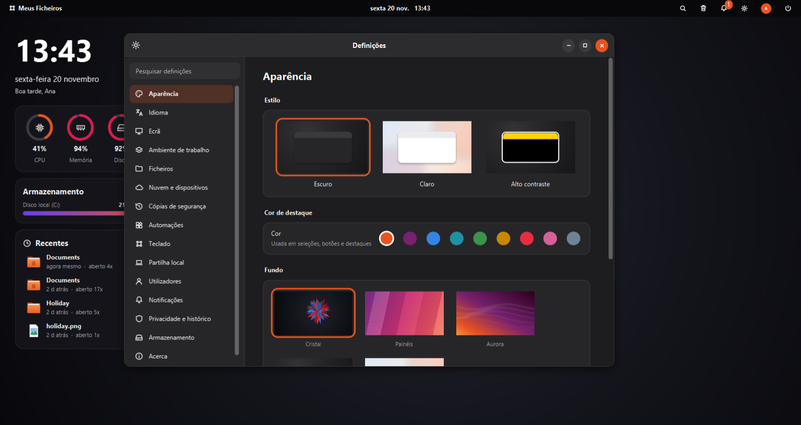
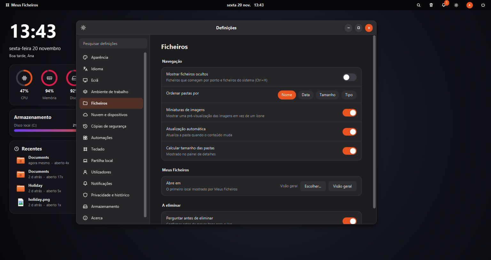

Definições
Abra as Definições com a roda dentada na barra superior ou com Ctrl+,. A caixa de pesquisa no topo da lista encontra uma página por qualquer palavra ("fundo", "usb", "atalhos"…). As alterações são guardadas de imediato.

| Página | O que pode alterar |
|---|---|
| Aparência | Estilo escuro, claro ou de alto contraste, 9 cores de destaque, 5 fundos ou a sua própria imagem, tamanho do texto. |
| Idioma | Idioma do sistema ou um de 9 idiomas, com Reiniciar agora. |
| Ecrã | Brilho, luz noturna, ecrã inteiro, animações (também desligadas quando o sistema pede menos animações). |
| Ambiente de trabalho | Widgets ligados/desligados, estilo dos widgets (Vidro, Sólido, Minimalista, Contorno, Cor de destaque), relógio de 24 h e com segundos. |
| Ficheiros | Mostrar ficheiros ocultos, ordenação, miniaturas, atualização automática, tamanhos das pastas, pasta inicial, confirmar antes de eliminar. |
| Nuvem e dispositivos | Contas WebDAV, pastas sincronizadas, dispositivos externos, servidores de rede. Veja Nuvem, dispositivos e rede. |
| Cópias de segurança | Tarefas de cópia de segurança. Veja Cópias de segurança. |
| Automações | Regras para pastas. Veja Etiquetas, linha do tempo e automações. |
| Teclado | Todos os atalhos, com Alterar, Predefinido e Repor todos os atalhos. Veja Atalhos de teclado. |
| Partilha local | Ligada/desligada, o nome que os outros veem, a pasta dos ficheiros recebidos. Veja Partilha local. |
| Utilizadores | Nome, nome completo, e-mail, foto ou cor do avatar, estatísticas de utilização. |
| Notificações | Faixas ligadas/desligadas, e uma notificação de teste. |
| Privacidade e histórico | Histórico de atividade ligado/desligado, quantos itens os Recentes lembram, limpar histórico, limpar favoritos, limpar o registo de erros. |
| Armazenamento | Unidades, Lixo, cópia das definições (exportar e importar, consulte Os seus dados e privacidade), a pasta da base de dados, repor todas as definições. |
| Sistema (desde a 3.11) | Os ficheiros do FileExp (.fexp, .fexc, .fexr) abrem no FileExp com o seu ícone, "Abrir no FileExp" nas pastas, o comando fileexp, abrir ao iniciar sessão. Veja Sistema abaixo. |
| Acerca | Versão, versões de Java e JavaFX, memória, créditos. Licenças e avisos legais (cada texto completo e a data em que foram aceites), Executar o assistente outra vez. Diagnóstico: quantos problemas tem o registo de erros, Copiar relatório e a pasta dos registos. |

Repor#
Definições › Armazenamento › Repor definições repõe os valores predefinidos das preferências de Aparência, Ecrã, Ambiente de trabalho, Ficheiros, Notificações e Privacidade e histórico (o idioma, os atalhos de teclado e a Partilha local mantêm os seus valores). Os seus ficheiros, etiquetas, favoritos, histórico e cópias de segurança não são alterados.
Sistema (desde a 3.11)#
Definições › Sistema liga o FileExp ao seu sistema. Tudo é feito só para a sua conta, sem direitos de administrador, e pode ser desligado aqui a qualquer momento. Cada interruptor mostra o estado real (lido em segundo plano: "A ler..."); se uma alteração falhar, aparece a mensagem e o interruptor volta ao estado real.
| Opção | O que faz | Por omissão |
|---|---|---|
| Cópias das definições (.fexp) | Um duplo clique num .fexp abre a importação das definições no FileExp, e o ficheiro tem o ícone do FileExp | Ligado (pelo instalador e pelo assistente) |
| Coleções inteligentes (.fexc) | Um duplo clique acrescenta a coleção (consulte Partilhar coleções e regras) | Ligado |
| Regras de automação (.fexr) | Um duplo clique acrescenta a regra | Ligado |
| "Abrir no FileExp" nas pastas | Botão direito numa pasta, ou no espaço vazio de uma pasta, no Explorador de Ficheiros (só Windows) | Desligado |
Comando fileexp | Num terminal novo, fileexp abre o FileExp e fileexp <pasta> abre essa pasta (acrescenta a pasta do FileExp ao PATH do utilizador) | Desligado |
| Abrir ao iniciar sessão | O FileExp abre quando entra no computador | Desligado |
- As associações feitas pelo instalador (para todos os utilizadores) aparecem como "Feito pelo instalador" e são removidas ao desinstalar; não se desligam aqui.
- Ao desligar, o FileExp apaga só o que aponta para ele; as entradas de outros programas e as outras pastas do PATH ficam como estavam.
- Na versão de desenvolvimento (sem instalação) e no macOS, a página explica que não está disponível.
- Um só FileExp: abrir o FileExp outra vez, um duplo clique num ficheiro do FileExp, "Abrir no FileExp" ou
fileexp <pasta>entregam o pedido ao FileExp que já está aberto, que vem para a frente.